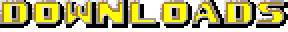

Thanks for playing! The latest version is v1.4!
Minimum Requirements:
- OS: Windows 98
- Processor: Intel Pentium @ 133 MHz
- RAM: 32 MB
- Graphics: 16-bit color capable video card at a resolution of 320x200
- Storage: At least 60 MB free space to install SRB2 Nozomi.
Recommended Requirements:
- OS: Windows 98SE or Later
- Processor: Intel Pentium II @ 233 MHz or Faster
- RAM: 64 MB or More
- Graphics: 16-bit color capable video card at a resolution of 640x400
- Storage: At least 60 MB free space to install SRB2 Nozomi.
Add-ons may vary.